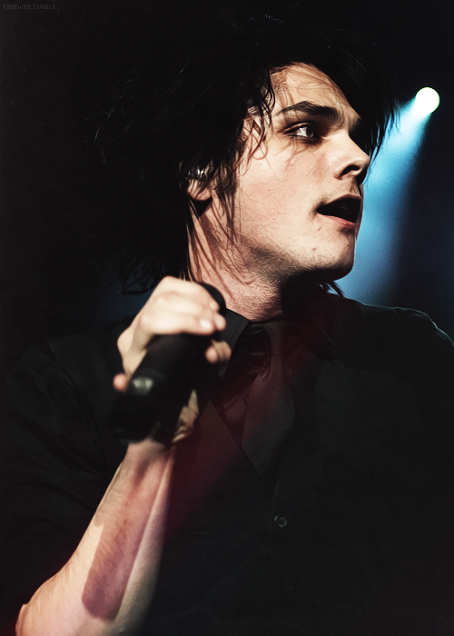
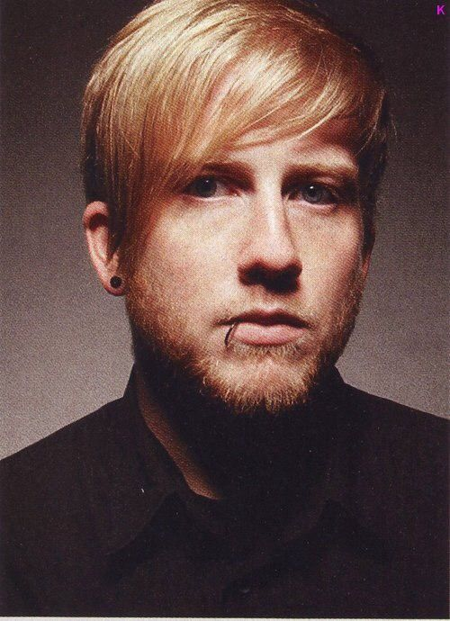

My Chemical Romance
Gerard Way, Mikey Way, Ray Toro, Frank Iero and Bob Bryar
My Chemical Romance is an American rock band from Newark, New Jersey. The band's current lineup consists of lead vocalist Gerard Way, guitarists Ray Toro and Frank Iero, and bassist Mikey Way. Founded by Gerard, Mikey, Toro, and Matt Pelissier (and later joined by Iero), the band signed to Eyeball Records and released their debut album, I Brought You My Bullets, You Brought Me Your Love, in 2002. They signed with Reprise Records the next year and released their major-label debut, Three Cheers for Sweet Revenge, in 2004. Shortly after the album's release, Pelissier was replaced by Bob Bryar. A commercial success, the album was awarded platinum status over a year later.
The band eclipsed the success of their previous albums with their 2006 concept album, The Black Parade, which gained generally favorable reviews among music critics and was certified double platinum in the United States and the United Kingdom, the band's only double platinum. After the departure of long-time drummer Bob Bryar in March 2010, the band released their fourth studio album, Danger Days: The True Lives of the Fabulous Killjoys, in November that same year, to positive reviews. The band replaced Bryar on tour with drummers including Michael Pedicone and Jarrod Alexander. After the addition of touring keyboardist James Dewees in 2012 and the release of Conventional Weapons, a series of singles recorded in 2009, released over the course of five months, the band announced its breakup on March 22, 2013, one month after the final release in the Conventional Weapons series.[1] After the band's split, a greatest hits album titled May Death Never Stop You was released in March 2014.[2] A tenth-anniversary reissue of The Black Parade, including demos and live versions of the B-sides from the album and an early version of "Welcome to the Black Parade", titled "The Five of Us Are Dying", was released on September 23, 2016, titled The Black Parade/Living with Ghosts.
The band reunited out of the public eye in 2017[3] and announced a reunion show on October 31, 2019, which took place in Los Angeles on December 20, 2019, extending this to a small tour consisting of dates in Australia, New Zealand and Japan a week later.[4][5] This was followed by a European announcement in January 2020; however, all shows were later postponed because of the COVID-19 pandemic.
Early career (2001–2002)
The band was formed by frontman Gerard Way and drummer Matt Pelissier in Newark, New Jersey, soon after the September 11 attacks.[6] Witnessing the World Trade Center towers fall influenced Way's life to the extent that he decided to start a band.[7] Way has said "music was this thing I secretly wanted to do"[8] and later wrote the song "Skylines and Turnstiles" to express his feelings about September 11 and shortly thereafter, Ray Toro was recruited as the band's guitarist because at the time Way could not sing and play the guitar simultaneously.[9] The name of the band was suggested by bass guitarist Mikey Way, younger brother of Gerard, who was working in a Barnes & Noble when he was struck by the title of a book by Irvine Welsh named Ecstasy: Three Tales of Chemical Romance.[10] The first recording sessions were undertaken in Pelissier's attic, where the songs "Our Lady of Sorrows" and "Cubicles" were recorded. The band refers to those sessions as "The Attic Demos."[11] After hearing the demo and dropping out of college, Mikey Way decided to join the band. While with Eyeball Records, the band met Frank Iero, the lead vocalist and guitarist for Pencey Prep. Following Pencey Prep's split in 2002, Iero became a member of My Chemical Romance, just days prior to the recording of the band's debut album.[9] They recorded their debut album, I Brought You My Bullets, You Brought Me Your Love, just three months after the formation of the band and released it in 2002 through Eyeball Records.[6] The album was produced by Thursday frontman Geoff Rickley after the band became friends with him while playing shows in New Jersey.[12] Iero played guitar on two of the tracks, one of which was "Early Sunsets Over Monroeville." During this time, the band was booked at the infamous venue, Big Daddy's, where they began to receive more attention.[13]
Major label signing and Three Cheers for Sweet Revenge (2003–2006)
In 2003, the band signed a deal with Reprise Records.[6] Following a tour with Avenged Sevenfold, the band began working on their second album, which was titled Three Cheers for Sweet Revenge, which was released on June 8, 2004. A month after the album's release, the band replaced Matt Pelissier with Bob Bryar.[6] The band released four singles from the album: "I'm Not Okay (I Promise)", "Thank You for the Venom", "Helena", and "The Ghost of You".[16] The album went platinum in just over a year of its release.[13][17][18] At the beginning of 2005, the band was featured on the first Taste of Chaos tour along with The Used and Killswitch Engage.[19] The band also was the opening act for Green Day on their American Idiot tour.[20] They then co-headlined Warped Tour 2005 with Fall Out Boy and co-headlined a tour with Alkaline Trio and Reggie and the Full Effect around the US.[21] That same year, My Chemical Romance collaborated with The Used for a cover of the Queen and David Bowie classic, "Under Pressure", which was released as a benefit single for tsunami relief on iTunes and other Internet outlets.[22] In March 2006, the album Life on the Murder Scene was released, incorporating a CD and two DVDs. It included one documentary DVD chronicling the band's history, and a second DVD with music videos, the making of their videos and live performances. An unauthorized biography DVD Things That Make You Go MMM! was also released in June 2006. The DVD does not actually feature any My Chemical Romance music clips or performances but contains interviews with those who knew the band before much of their fame.[23][24][25] A biography titled Something Incredible This Way Comes was also released, written by Paul Stenning and published in 2006. It features information on their beginnings right through to their third album, The Black Parade.
The Black Parade (2006–2009)
My Chemical Romance started recording their third studio album on April 10, 2006 with Rob Cavallo, producer of many of Green Day's albums.[26][27] It was originally thought to be titled The Rise and Fall of My Chemical Romance (in reference to The Rise and Fall of Ziggy Stardust and the Spiders from Mars by David Bowie), but in an interview with Kerrang! magazine, Gerard Way suggested this was just the album's working title, stating "It was never the title of the album, more a spoof, or joke."[28] On August 3, 2006, the band completed shooting the videos for their first two singles from the album, "Welcome to the Black Parade" and although not released until January 2007, "Famous Last Words".[29][30] Both videos were directed by Samuel Bayer, director of Nirvana's "Smells Like Teen Spirit" and Green Day's American Idiot videos.[31] During filming for the second video, band members Gerard Way and Bob Bryar were injured. Way suffered torn ligaments in his ankle, and Bryar a burn to the leg which caused a severe staph infection that needed constant monitoring in the hospital. Consequently, the band was forced to cancel a few tour dates. While these injuries were reported by several news agencies to have been the result of a car accident, a statement released by the band on their website and MySpace page confirmed that these injuries occurred on the set of the video.[32] On August 22, 2006, the band played a special one-off show at the 1,800-capacity London Hammersmith Palais. The show sold out in 15 minutes, which led to tickets being re-sold on eBay at prices well above face value. The name of the album was announced and 20 people dressed in black capes with their faces obscured paraded around the Hammersmith venue, followed by a large group of fans and street team members with signs saying "The Black Parade". Later during the show, the album title and the UK release date were confirmed. Before the band took the stage, it was announced that My Chemical Romance was unable to play, but they would be replaced by The Black Parade. After initial crowd hostility, it became clear the band was simply performing under a pseudonym in keeping with the theme of the album. Since then, the band would often perform under the alias "The Black Parade", wearing the costumes seen in the album's music videos. Gerard Way would adopt the persona of the leader of the marching band, The Black Parade, and vary his behavior and performance accordingly.[33] "Welcome to the Black Parade" was released as a single on September 11, 2006. On September 26, 2006, the music video for "Welcome to the Black Parade" was released in the UK, and on September 27 in the US.[28] The single became the band's first number one on the UK Singles Chart in October 2006. The Black Parade was released on October 23, 2006, in the United Kingdom and on October 24, 2006, in the United States to positive reviews.[34]
Gerard Way
Bob Bryar
Mikey Way
Ray Toro
Frank Iero